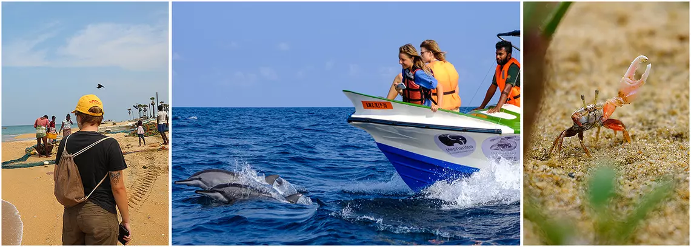

Welcome to the vibrant realm of Sri Lanka's wildlife, where lush jungles, majestic mountains, and pristine coastlines converge to create a haven for nature enthusiasts. Embark on an unforgettable journey through diverse ecosystems teeming with endemic species found nowhere else on Earth. From the elusive Sri Lankan leopard prowling through the dense forests to the graceful movements of elephants in their natural habitats, every encounter promises awe and wonder. Join us in exploring the rich tapestry of biodiversity that defines Sri Lanka, where conservation efforts and sustainable practices ensure the preservation of this precious heritage for generations to come. Welcome to paradise for wildlife lovers.
Wildlife Diversity

Sri Lanka's biodiversity is renowned globally for its richness and uniqueness, encompassing a wide array of ecosystems, species, and habitats within its relatively small land area. From lush rainforests to arid dry zones, coastal mangroves to highland cloud forests, the island offers a diverse range of environments that support an astonishing variety of life. The island's geographic location, nestled between the Indian subcontinent and Southeast Asia, contributes to its exceptional biodiversity by serving as a crossroads for numerous species from different regions.
However, despite its biological richness, Sri Lanka's biodiversity faces numerous threats, including habitat loss, fragmentation, poaching, and climate change. Conservation efforts are underway to preserve and protect the island's unique ecosystems and species, ensuring that future generations can continue to marvel at Sri Lanka's remarkable biodiversity.
Endemic Species

Endemic species in Sri Lanka refer to plants and animals that are found exclusively within the island nation's borders, making them unique to Sri Lanka and not found naturally anywhere else in the world. The island's isolation from mainland landmasses, coupled with diverse ecosystems ranging from rainforests to dry zones, has fostered the evolution of numerous endemic species.
- Asian Elephant
- Leopard
- Leopard
- Sloth Bear
- Sperm whale
These endemic species play a crucial role in the island's ecosystems and are often the focus of conservation efforts to ensure their survival in the face of various threats, including habitat loss, fragmentation, and poaching. Protecting and preserving Sri Lanka's endemic species is essential not only for maintaining the island's rich biodiversity but also for safeguarding its natural heritage for future generations.
Conservation Efforts
Conservation efforts in Sri Lanka are extensive and multifaceted, aiming to protect and preserve the island's rich biodiversity and natural habitats. Spearheaded by organizations such as the Department of Wildlife Conservation, along with various non-governmental organizations (NGOs) and international partners, these initiatives address a wide range of challenges facing Sri Lanka's wildlife and ecosystems.We have a few initiatives done in Sri Lanka:
- Protected Areas: Establishment and management of national parks, reserves, and sanctuaries.
- Community Engagement: Initiatives promoting awareness and sustainable livelihoods among local communities.
- Anti-Poaching Measures: Enforcement of wildlife laws and crackdowns on illegal wildlife trade.
Additionally, efforts to combat illegal wildlife trade, habitat degradation, and pollution are ongoing, with strengthened enforcement of wildlife laws and implementation of conservation policies.Overall, conservation efforts in Sri Lanka are integral to safeguarding the island's natural heritage for future generations, ensuring that its diverse wildlife and ecosystems continue to thrive in the face of ongoing threats and challenges.